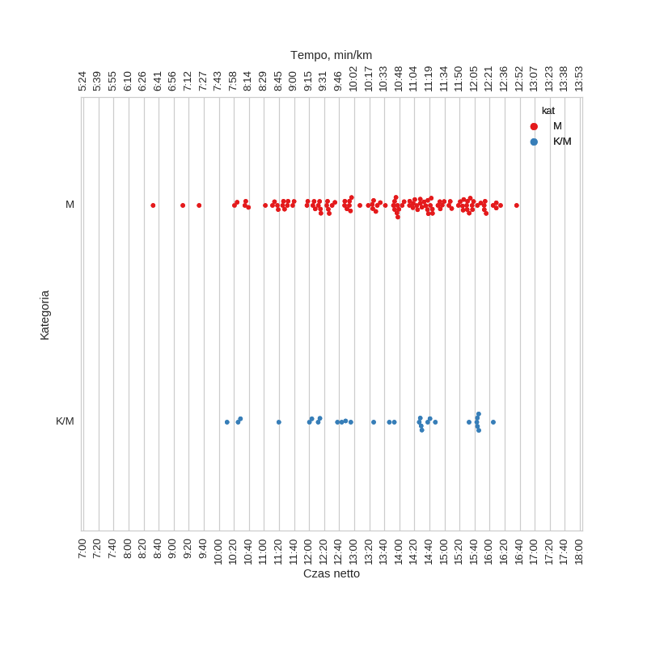

VIII Bieg o Puchar Rzeźnika (2011)
Histogramy
wszyscy

Wykresy rybkowe
wg kategorii

| czas | count | |||||||
|---|---|---|---|---|---|---|---|---|
| mean | std | min | 25% | 50% | 75% | max | ||
| kat | ||||||||
| K/M | 13:38:13 | 1:46:13 | 10:11:02 | 12:14:30 | 13:53:24 | 14:47:58 | 16:05:01 | 29 |
| M | 13:36:45 | 1:45:41 | 8:32:43 | 12:15:38 | 13:57:17 | 14:57:45 | 16:36:00 | 112 |
Menu
HistogramyWykresy rybkowe
∙ wg kategorii
Liczba uczestników: 146
Wygenerowano: 2016-03-26 09:23:08.122359